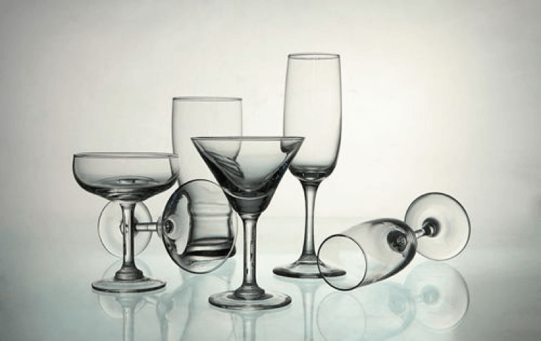

不同颜色葡萄的不同功效
我国历代医药典籍对葡萄的药用均有论述。中医认为，葡萄味甘微酸、性平，具有补肝肾、益气血、开胃力、生津液和利小便之功效在炎炎夏日食欲不佳者，时常食用有助开胃。葡萄含糖量高达10%-30%，以葡萄糖为主。葡萄中的多量果酸有助于消化，适当多吃些葡萄，能健脾和胃。具体来说，吃葡萄有以下好处
1、葡萄有抗疲劳的功效：葡萄中含有矿物质钙、钾、磷、铁、蛋白质以及多种维生素B1.B2.B6.C和P等，还含有多种人体所需的氨基酸，常食葡萄对神经衰弱、疲劳过度大有裨益。
2、葡萄有补血的功效：把葡萄制成葡萄干后，糖和铁的含量会相对高，是妇女、儿童和体弱贫血者的滋补佳品。从中医的角度而言葡萄有舒筋活血、开胃健脾、助消化等功效，其含铁量丰富，所以补血。
3、葡萄不但具有广泛的药用价值，还可用于食疗：头晕、心悸、脑贫血时，每日饮适量的葡萄酒2-3次，有一定的治疗作用；干葡萄藤15克用水煎服可治妊娠恶阻。
4、现代医学研究表明，葡萄还具有防癌、抗癌的作用。

5、葡萄可用来酿酒：然而，葡萄的巨大经济价值主要在于酿酒，全世界80%的葡萄都用于酿酒。但是，随着人们保健意识的增强，消费观念的转变，越来越多的葡萄被酿成果汁，成为味美多效的营养保健果品。其不但能治疗多种疾病，直接饮用葡萄汁还有抗病毒的作用。